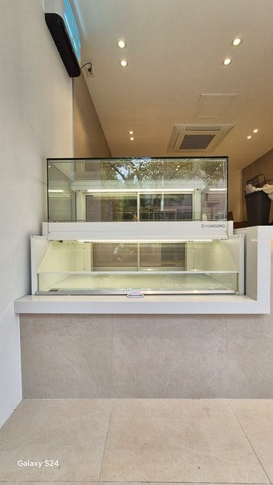
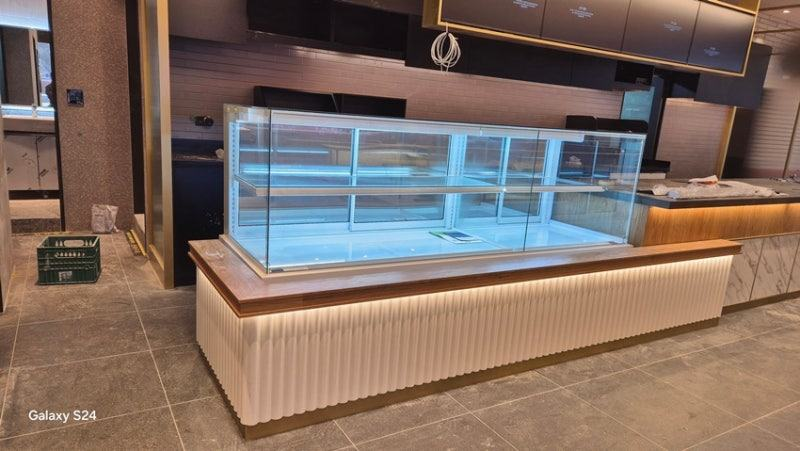

쇼케이스 이용 및 관리
주류회사지원냉장고 구매냉장고 차이, 계약 전에 따져 볼 것

주류회사지원냉장고는 초기 부담이 적은 대신 소유권과 진열 상품, 회수 조건이 계약에 묶이는 경우가 많고, 구매냉장고는 처음 비용이 들지만 크기와 디자인, 진열 품목을 사장님 뜻대로 정할 수 있습니다. 매장 공간이 애매하거나 여러 브랜드를 함께 팔 계획이라면 구매가, 표준 크기로 충분하고 특정 제품 위주로 판다면 지원 냉장고가 맞을 수 있습니다.
안녕하세요. 주점, 식당, 소매점의 주류·음료 쇼케이스를 매장 크기에 맞춰 만드는 한성쇼케이스입니다.
식당이나 호프집을 여시면 주류 거래처에서 냉장고를 지원해 준다는 이야기를 듣게 됩니다. 돈을 들이지 않고 냉장고가 생기니 당연히 반가우시죠.
그런데 몇 달 운영해 보신 사장님들 중에는 "우리 매장엔 안 맞는 것 같다"며 직접 냉장고를 알아보시는 분도 적지 않습니다.
지원 냉장고와 구매 냉장고는 단순히 공짜냐 아니냐의 차이가 아니라, 누가 그 냉장고를 결정하느냐의 차이에 가깝습니다.
크기, 위치, 진열 품목, 고장 났을 때 연락할 곳이 모두 달라집니다.
오늘은 두 방식의 차이를 항목별로 비교하고, 어떤 매장에 어느 쪽이 맞는지 판단하는 기준을 정리해 드리겠습니다.
계약 조건은 거래처마다 다르니 실제 계약서와 함께 보시길 권합니다.
1. 소유권과 계약 조건
지원 냉장고는 보통 거래처 소유로 매장에 두는 형태라, 거래를 끊거나 계약이 끝나면 회수되는 경우가 많습니다.
일정 기간이나 거래량 조건이 붙기도 합니다. 계약서에 회수 조건, 파손 시 책임, 이전 설치 가능 여부가 어떻게 적혀 있는지 꼭 확인해 보세요.
구매 냉장고는 사장님 소유라 거래처를 바꿔도 그대로 쓸 수 있고, 매장을 옮길 때 함께 가져갈 수 있습니다.
처음 비용이 드는 대신 이후의 선택이 자유롭습니다.
- 회수 조건과 계약 기간을 확인하세요.
- 파손·고장 시 책임 범위를 확인하세요.
2. 진열 품목과 외관
지원 냉장고는 해당 회사 제품 위주로 진열하도록 조건이 붙거나, 외관에 브랜드 로고가 크게 들어가 있는 경우가 많습니다.
여러 브랜드의 맥주와 소주, 전통주, 음료를 함께 보여 주고 싶은 매장이라면 불편할 수 있습니다.
구매 냉장고는 진열 품목을 마음대로 정하고, 프레임 색과 조명을 매장 인테리어에 맞출 수 있습니다. 외관과 진열 방식, LED 조명 색이 매장과 잘 어우러지면 손님이 술을 고르는 시간도 즐거워집니다.


3. 크기와 설치 자리
지원 냉장고는 정해진 표준 모델 중에서 받는 경우가 대부분이라, 매장 자리에 맞지 않아도 크기를 바꾸기 어렵습니다.
공간이 좁은 매장에서는 억지로 밀어 넣어 통로를 막거나 벽에 바짝 붙여 열이 빠지지 못하는 일이 생깁니다.
구매, 특히 맞춤 제작은 자리 폭과 높이, 문 열림 방향을 매장에 맞출 수 있습니다. 작은 매장은 작은 자리에 꼭 맞게, 넓은 매장은 벽면이 꽉 차 보이게 크기를 조절할 수 있다는 점이 가장 큰 차이입니다.
- 설치 자리 폭·높이와 문 열림 방향을 재 보세요.
- 뒷면 열 배출 공간이 남는지 확인하세요.
4. 고장 났을 때의 대응
업소용 냉장고는 사용 빈도가 높고 매출과 바로 연결돼 고장 시 빠른 대처가 중요합니다. 지원 냉장고는 거래처를 통해 수리를 요청하게 되는데, 접수 경로와 대응 속도를 미리 물어 두세요.
구매 냉장고라면 제조사의 A/S 체계가 갖춰져 있는지 확인하셔야 합니다. 한성쇼케이스는 전국 240여 개 A/S 센터를 운영하고 있어 지방 매장도 가까운 곳에서 접수하실 수 있습니다.
체크리스트
- 소유권과 회수 조건
- 진열 가능 품목 제한 여부
- 외관 로고와 인테리어 조화
- 설치 자리와 크기 맞춤 가능 여부
- 고장 시 접수 경로와 대응 속도
- 매장 이전 시 이동 가능 여부
현장에서 자주 보는 경우: 표준 크기 냉장고를 좁은 자리에 넣으려 할 때
1200 크기 냉장고를 두고 기성품과 맞춤 제작 사이에서 고민하시는 사장님이 많습니다. 기성품은 대량 생산이라 부담이 적지만 모양과 크기가 정해져 있어, 공간이 좁은 매장에 억지로 넣으면 어색해 보이거나 매장 분위기를 해치기도 합니다.
프랜차이즈가 아닌 개인 매장이라면 맞춤 제작으로 디자인, 크기, 높이, 폭을 조절해 몸에 맞는 옷처럼 자리에 맞추는 편이 유리하다고 말씀드립니다.
어느 쪽을 고르든 체계적인 A/S가 갖춰져 있는지는 꼭 확인하시라고 안내합니다.




자주 묻는 질문
지원 냉장고를 쓰다가 구매 냉장고로 바꿔도 되나요?
계약 조건에 따라 회수 일정과 절차가 다르니 거래처와 먼저 확인하세요. 교체 시점을 맞추면 영업 공백 없이 바꿀 수 있습니다.
지원 냉장고와 구매 냉장고를 같이 써도 되나요?
많은 매장이 그렇게 운영합니다. 주력 브랜드는 지원 냉장고에, 다양한 주류와 음료는 구매 냉장고에 나눠 진열하는 방식입니다.
주류 냉장고도 매장에 맞춰 크기를 정할 수 있나요?
가능합니다. 설치 자리 치수와 진열할 병 종류를 알려 주시면 선반 간격과 문 구조까지 맞춰 제작해 드립니다.
매장 조건에 맞춰 만드는 한성쇼케이스
원하시는 제품 사진과 설치할 공간 사진만 보내 주셔도 매장에 맞는 구성을 추천해 드립니다.
- 전국 240여 개 A/S 전담 센터 운영
- 본사 대량 자재 매입으로 품질 대비 합리적인 가격
- 유럽제·삼성 냉각 콤프레셔 적용
- 국내 최초 쇼케이스 전문 디자이너 상주
매장 폭과 원하는 진열 구성을 알려 주세요. 실측과 견적을 안내해 드립니다.
031-986-2458